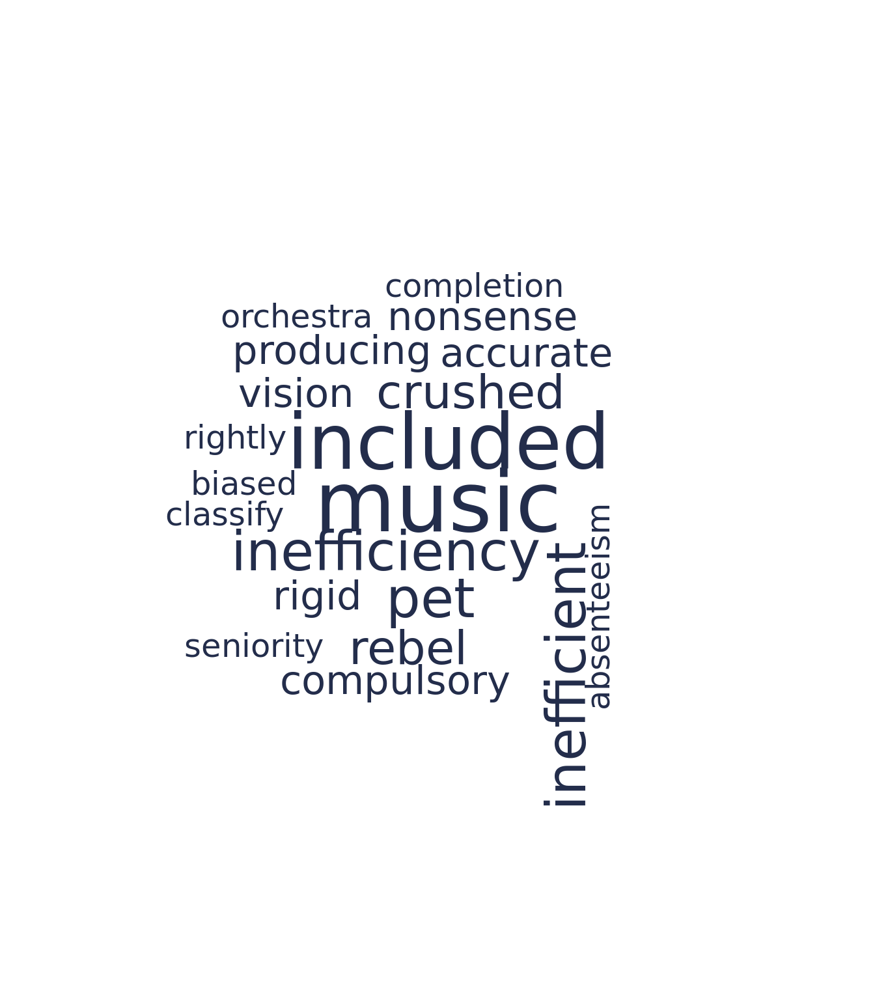
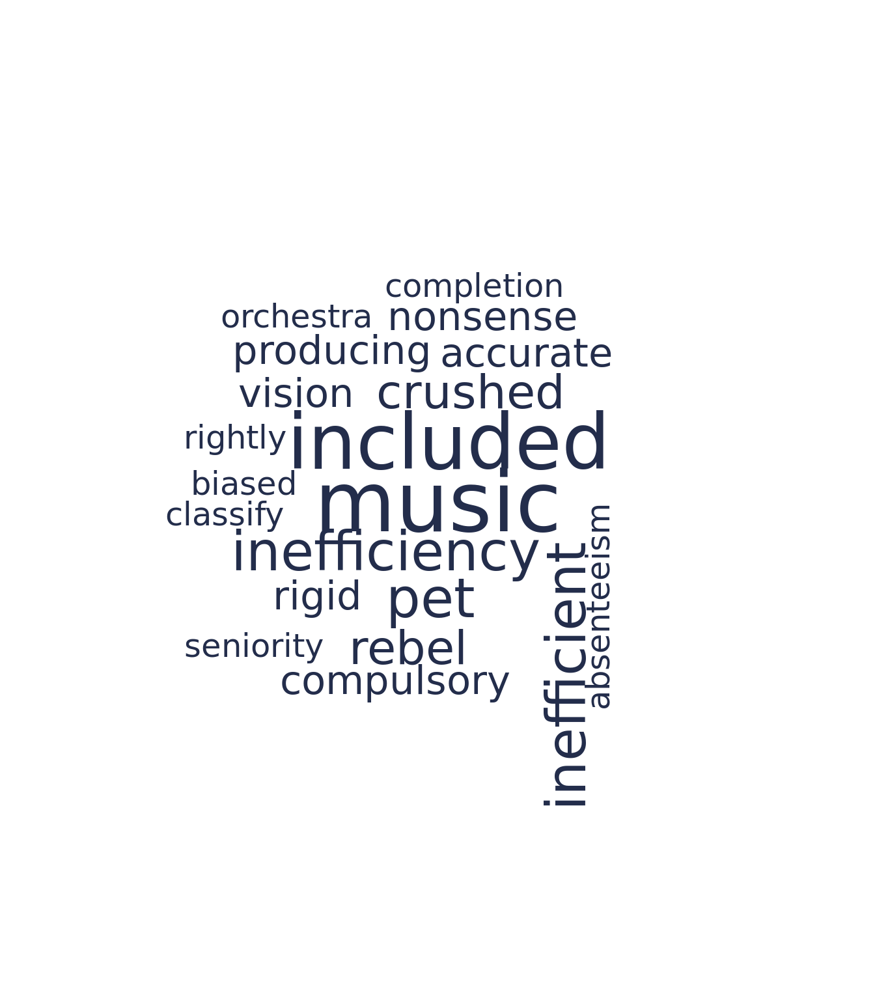

2020 DSPG Symposium Presentation
Symposium Presentation of the 2020 DSPG American Soldier Project
American Soldier Overview
- American Soldier is a project headed by Ed Gitre and is funded by the National Endowment for the Humanities as a digital history project.
- The data set includes 65,000 pages of uncensored commentaries written by U.S. soldiers stationed around the globe during WWII.
- This data set was transcribed by volunteer citizen-archivists on Zooniverse.

Project Goals
- Our main topics of focus from the data:
- Race relations (S32: attitudes of and towards Negroes, Mar 1943)
- Gender relations (S195: attitudes toward Women's Army Corps, Nov-Dec. 1943)
- Race and Spatial arrangements
Data
- Survey 32:
- Outfits Question (Multiple Choice): "Do you think white and black soldiers should be in separate outfits?"
- Short Response (Text): Any comments on their answer to question 63 (shown above).
- Long Response (Text): Any comments they had on any aspect of the questionnaire.

- Survey 144
- Post-war career plans of black soliders.
- No text data.
- Survey 195
- Attitudes towards the Women's Army Corps (WAC): Is the army any place for a girl to be?"
- No text data.
Methods
- Topic Modeling
- Sentiment Analysis
- Text Networks
Summary Statistics
We want to give a sense of the soldiers who took Survey 32 as they constitute the population we did our text analysis on.
Overall the soldiers are on the younger side.

- The Black soldiers surveyed were not well educated in contrast with the white soldiers where most had at least some highschool.

- White soldiers were predominately against integrating outfits while Black soldiers were mostly split or didn't care.

Text Cleaning
- White: 2,324 respondents
- Long Response Average: 56.71 words
- Short Response Average: 11.48 words
- Black: 3,464 respondents
- Long Response Average: 73.04 words
- Total: 8,102 text responses
Text Sample: "when the war going to quit? [paragraph] will filling in these questions do any good? [paragraph] now it ant[ain't] no good if [unclear][/unclear] dond doe as i hope but you small help the poor culler[colored] people cause we dont now[know] what we are doing [by the man who that was interviewed]"
- Cleaning the text:
- Manual cleaning of tags
- Spell Check
- Stemming
- Lemmatizing
Race Relations
Sentiment Analysis
- The NRC dictionary associates a word with the following sentiments: positive, negative, anger, anticipation, disgust, fear, joy, sadness, surprise, and trust.
- The sentiment of a body of text equals the number of words contributing to that sentiment.
- Words referring to race are biased within the sentiment libraries, so we removed them to mitigate racial bias in our analysis.

- The plot was created from the words used uniquely by each group, so the words used to evaluate sentiment for black soldiers were never used by white soldiers and vice versa. The unique words of black soldiers corresponded with more fear, disgust, anger, and sadness than those of white soldiers.
- The wordclouds below visualize the top 20 frequently used unique words by black and white soldiers, on the left and right respectively. The size of the word is proportional to the number of times it appears in the text.
 

- The unique words reveal what topics aren't addressed by the other group. Perhaps, the most important takeaway from these wordclouds is that the words slavery, lynch, or jail never appeared in the response of a white soldier.
- White soldiers unique words were significantly more lighthearted as they discussed things such as music and pets.
Co-Occurence Networks
- Used community detection algorithms on the co-occurence networks to identify groups of related words.
- The size of the nodes corresponds to the degree of the node ie. it is connected to more words.
Black Soldiers' Long Comment

White Soldiers' Long Comment

Topic Modeling
- A useful method to understand what the general themes are within a corpus by modeling the words which constitute a topic
- Used Biterm Topic Modeling to model the topics within each corpus of answers
- This works better on shorter texts
- It's a Gibbs Sampler that directly models the word-word co-occurrences patterns as opposed to word-document co-occurrences
Topic Model Network for Black Soldiers' Long Comment
Topic 1: Touches on war and the chance to fight. Also suggests sort of give and take and expecting to get something better out of it in the end. Topic 2: Is about segregation in different spaces within the military. Topic 3: Is filled with optimistic words such as better, opportunity, equality, chance, free and fair. At the same time however, it speaks of Jim Crow. Topic 4: Talks about positions within the military and potentially also having black officers. Topic 5: Touches upon various parts of the day to day life and seems a bit more mundane. Topic 6: Focuses in on race and geography specifically mentioning negro, white, north, and south, etc.
Topic Model Network for White Soldiers' Long Comment
Topic 1: In general talks about the war/army and includes words such as give and take. Topic 2: Is about about getting time to eat and getting furloughed. Topic 3: Soldiers talk about positions in the military and also includes terms like valuable, waste, time, and money suggesting they are thinking of career prospects here. Topic 4: Identifies the enlistment/service experience and how many of the soldiers are young. Topic 5: Focuses on how the questionnaire is a chance to talk about race and whether this opportunity is needed or not. Topic 6: Is about different branches in the military and the experience needed to transfer.
Gender Relations
- Our particular focus is on women's gender roles during the time of 1943, especially at the intersection of race relations. Women were obviously unable to serve in the military in the same capacity as men during WW2; however, women did contribute to the war effort through the Women's Army Corps (WAC).
- Survey 195 is more targeted to gender relations, but we don't have transcriptions of the free form text so we select responses that discuss gender from Survey 32 using a word dictionary.
- A dictionary of gender words are loaded to identify which responses relate to gender topics. This dictionary was created using terms included in the Oxford University Press Dictionary of Gender Studies.
- Furthermore, phrases such as "colored women" and "negro women" are collapsed and pre-stemmed/pre-lemmed to "colorwoman" and "negrowoman" in both the dictionary and the text.
- The purpose of this is to treat these references to women as a single entity as opposed to the text being analyzed as colored and negro being frequent adjectives for women.
- You can view the dictionary below:

- In the above plot, we see that black soldiers often write that "woman holler rape".
- Black men often were often wrongly and publicly accused of sexual assault during this time period, and we can see that black soldiers are discussing that in their responses.
- Black soldiers are talking about interracial marriage.

- A common word sequence used by white soldiers was "white like negro".
- White soldiers are also discussing interracial marriage.
Spatial Arrangement
- Spatial segregation of Black Americans was enforced in the American South with numerous local and state laws known as the Jim Crow laws from late 19th century to early 20th century.
- Are themes of spatial segregation prevalent in the soldiers' responses and experiences in the military during WWII?
- We created a spatial dictionary with words such as camp, messhall, etc. to see what the soldiers were saying when they were talking about these spaces.
- We see that there's a greater amount of commentary from black soldiers than white soldiers.
- They were very aware of these spaces and associated words like "mix", "together", "same", "separate", and "individual."
The white soldiers commentary suggests they want separate messhalls, and to not eat or live with the Black soldiers.
- We also looked at how white soldiers talked about spatial arrangments by sorting if they were pro integration of outfits or opposed.
- Although some white soldiers were in favor of integrating outfits, there was still clear commentary from the soldiers should not be sharing the space in living arrangements or social space with black soldiers.
- Also see commentary suggesting Southern and Northern soldiers be separated.
Also mentions the Chinese and Filipinos.


Conclusion
- Novel dataset from a unique, historic collection by the U.S. Army during WW2
- Analyze soldiers' handwritten responses by using natural language processing methods and social network analysis to dive into soldiers' attitudes about:
- Race relations
- Black soldiers discussed their position within the military and society in the context of their race more frequently than white soldiers. White soldiers more frequently discussed the war or their career plans.
- Gender relations
- The majority of male soldiers did not think that women belonged or could contribute to the military.
- Tension due to interracial relationships.
- Race and spatial arrangement
- While some white soldiers wanted to desegregate the military outfits, they did not view their black counterparts as equals and didn't want to live, eat or sleep alongside them.
- Race relations